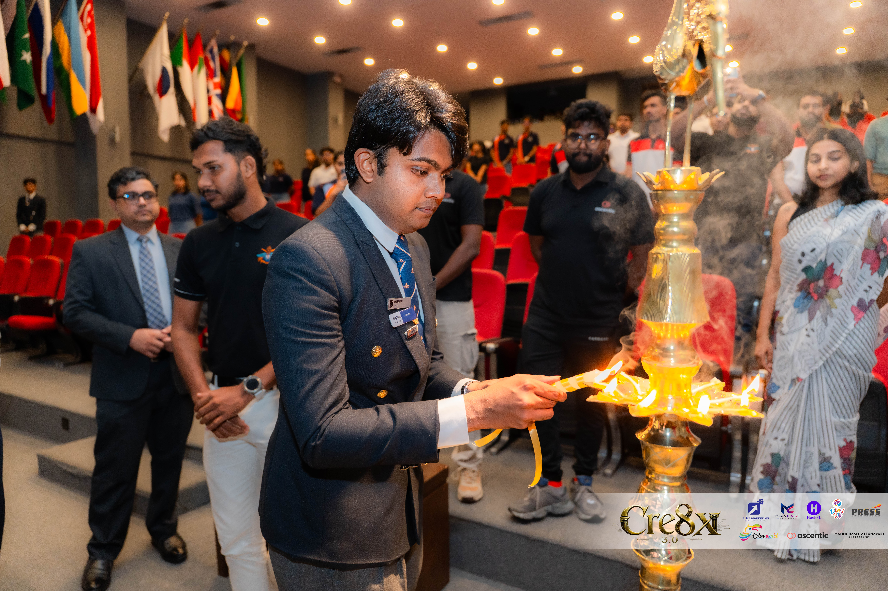
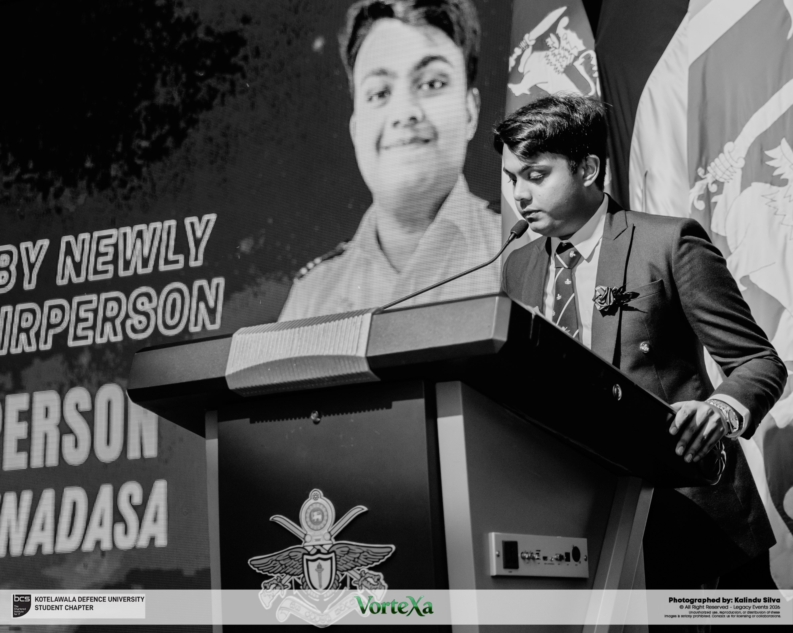

← About PaminduBeyond the
COMMUNITY / MOMENTS AT KDU
Beyond the
project desk.
Photos of Pamindu Karunadasa from student community events at Kotelawala Defence University.

At Vortexa 2026
Pamindu Karunadasa at the BCS KDU Student Chapter annual general meeting, Vortexa 2026.
Photography: Kalindu Silva · Legacy Events 2026

Opening CRE8X 3.0
Pamindu Karunadasa taking part in the lamp-lighting ceremony at CRE8X 3.0, KDU.
Photography: Madubhash Attanayake Photography · event credits retained in photograph

A moment at the lectern
Pamindu Karunadasa speaking at the BCS KDU Student Chapter annual general meeting, Vortexa 2026. Black-and-white photograph.
Photography: Kalindu Silva · Legacy Events 2026
Addressing the chapter
Pamindu Karunadasa delivering an address at the BCS KDU Student Chapter annual general meeting, Vortexa 2026.
Photography: Kalindu Silva · Legacy Events 2026